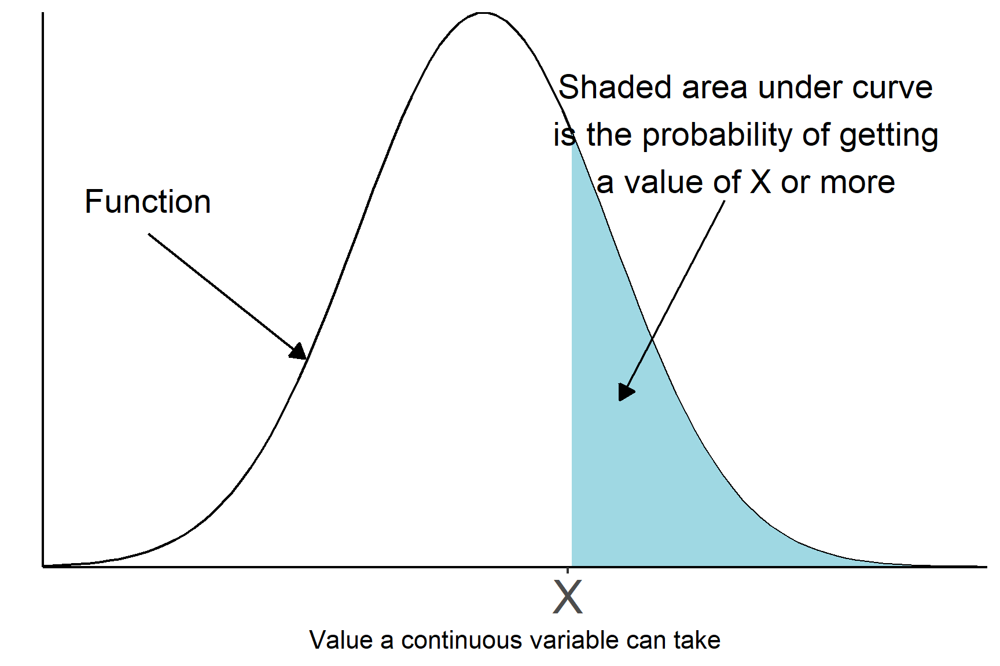
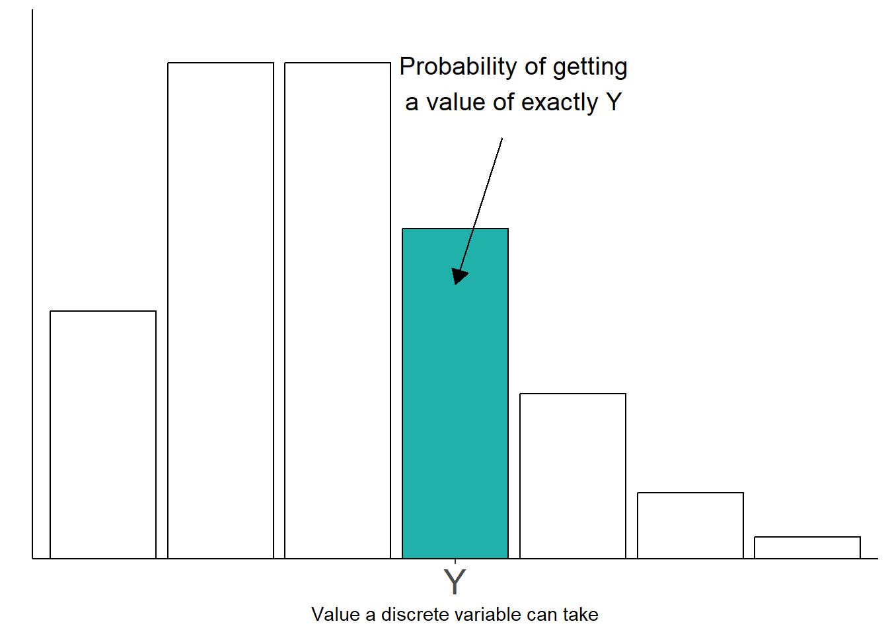
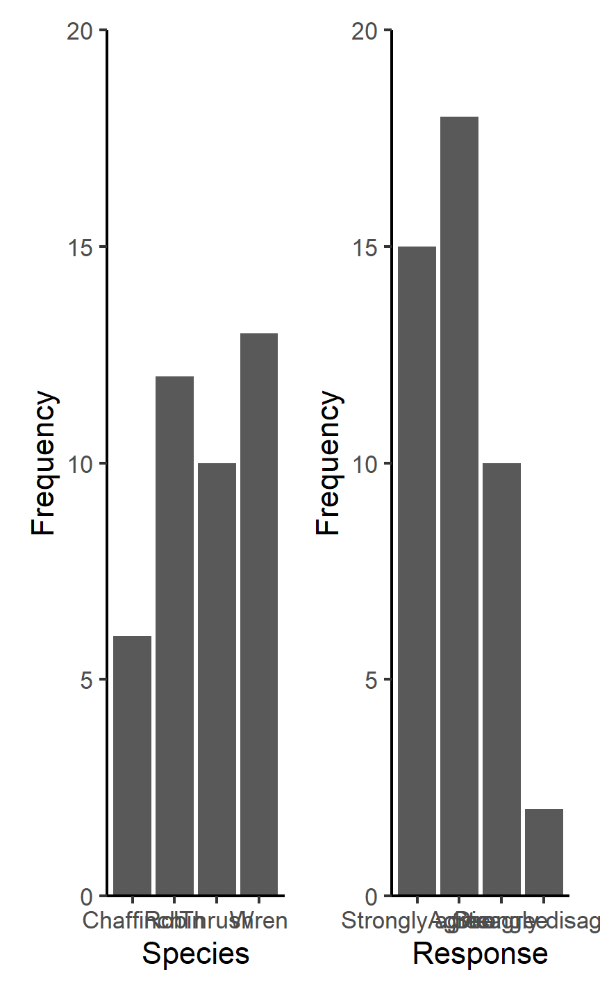
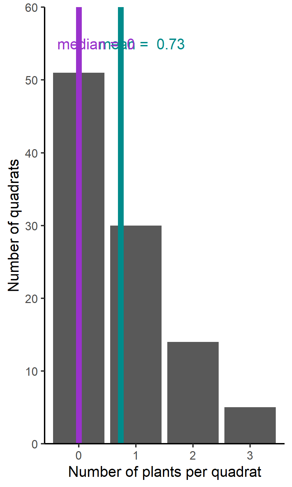
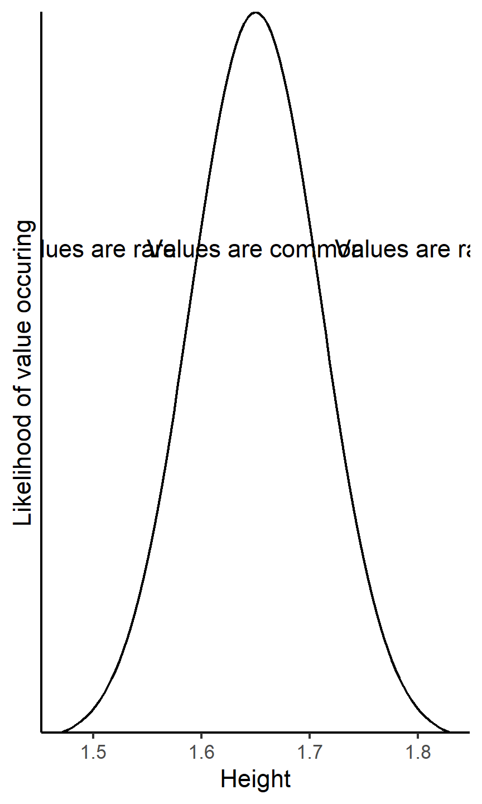
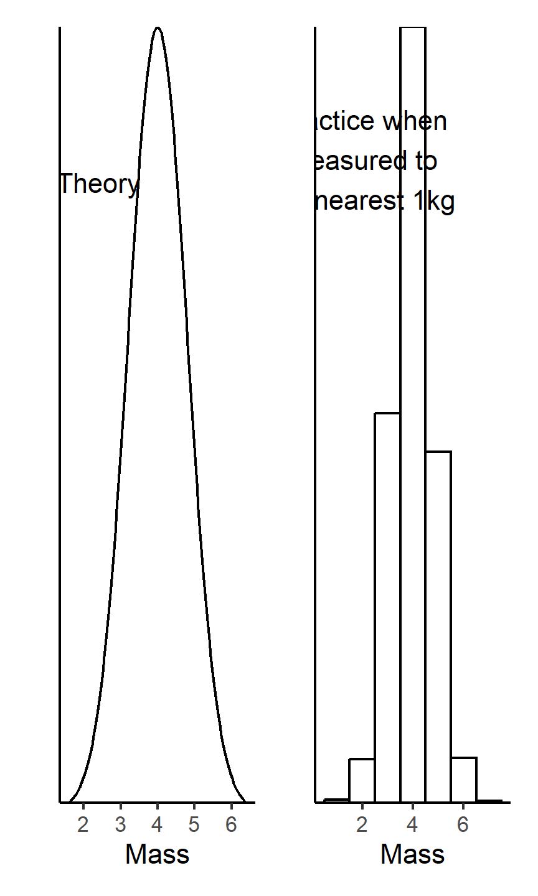
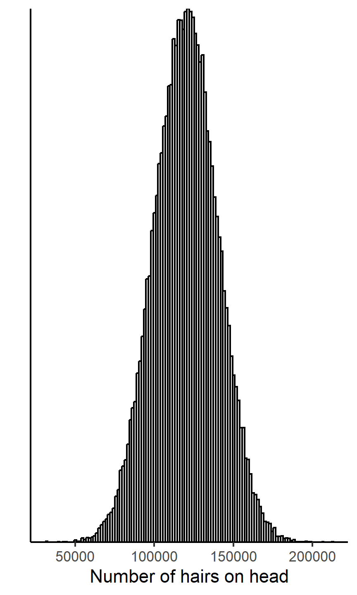

5 Ideas about data
Warning
You are reading a work in progress. This page is a first draft but should be readable..
This chapter covers some important concepts data. Data is made up of:
properties we have measured or recorded, known as variables, and
observations, the individual things with those properties.
Data is most commonly (and helpfully) organised with variables in columns and each observation on a row.
We can classify a variable in two main ways: by what role the variable takes in analysis and by what kinds of value it can take and how frequently its possible values occur. The type of value and the likelihood of values appearing is known as a variable’s distribution. Both of these determine how we summarise, plot and analyse data.
5.1 Roles of variables in analysis
When we do research, we typically have variables that we choose or set and variables that we measure. The variables we choose or set are called independent or explanatory variables. The variables we measure are called dependent or response variables. For example, we might measure the concentration of enzymes and hormones in blood samples of individuals with different genotypes. The genotype acts as the explanatory variable and the blood measurements are response. We would be interested in whether the blood measures differ between genotypes.
5.2 Distributions
Any variable has a distribution which describes the values the variable can take and the chance of them occurring. The distribution is a function (relationship) which captures how the values are mapped to the probability of them occurring. A distribution has a general type, given by the function and is further tuned by the parameters in the function. For example variables like height, length, concentration, mass and intensity follow a normal distribution also know as the bell-shaped curve so that they look similar. However, they have different means and standard deviations. The mean and the standard deviation are the parameters of the normal distribution.
An important distinction is between discrete and continuous types of data. Continuous variables are measurements that can take any value in their range (Figure 5.1). Discrete variables can take only specific values (Figure 5.2).

5.2.1 Discrete data
Discrete variables can take only specific values and can be categories, like genotype, or counts, like the number of petals.
5.2.1.1 Categories: Nominal and Ordinal
Categorical data can be nominal and ordinal depending on whether they are ordered. Nominal variable have no particular order, for example, the eye colour of Drosophila or the species of bird. When summarising data on bird species, it wouldn’t matter in what order the information was given or plotted. Ordinal variables have an order. The Likert scale Likert (1932) used in questionnaires is one example. The possible responses are Strongly agree, Agree, Disagree and Strongly disagree; these have an order that you would use when plotting them (Figure 5.3).

The most appropriate way to summarise nominal or ordinal data is to report the most frequent values or tabulate the number of each value (Table 5.1).
| Response | Frequency |
|---|---|
| Strongly agree | 15 |
| Agree | 18 |
| Disagree | 10 |
| Strongly disagree | 2 |
5.2.1.2 Counts
Counts are one of the most common data types. They are quantitative but discrete because they can take only specific values. Counts tend to follow a distribution called the Poisson distribution meaning that there is an expected number of zeros, ones and twos etc that appear. This is true no matter what you count. The distribution of counts is not symmetrical and has a tail to the right - especially for lower count ranges.
A mean and standard deviation are not usually the best way to summarise a count variable because their distribution is not symmetrical. Figure 5.4 shows the number of groundsel plants in a hundred 1 metre square quadrats1.

The mean of 0.73 groundsel plants per quadrat does not really reflect that the majority of quadrats contained no plants. The average is being dragged up by the few quadrats containing 3 plants.
For count variables - and other variables that are not symmetrical - it is often better to give the median and interquartile range.
The median is the middle value when the values are arranged in order. The interquartile range (IQR) indicates the spread in the data. The lower quartile is half way between the lowest value and the middle value and the upper quartile is half way between the middle value and the highest value.
5.2.2 Continuous data
Continuous variables are measurements that can take any value in their range so there are an infinite number of possible values. The values have decimal places. Variables like the length and mass of an organism, the volume and optical density of a solution, or the colour intensity of an image are continuous. Many response variables are continuous but continuous variables can also be explanatory. For example,
5.2.3 The normal distribution
Properties of normal distributions
For example, a variable like human height has values with decimal places which follow a normal distribution also known as the Gaussian distribution or the bell-shaped curve. Values of 1.65 metres occur more often than values of 2 metres and values of 3 metres never occur (Figure 5.5).

5.3 Theory and practice
The distinction between continuous and discrete values is clear in theory but in practice, the actual values you have may differ from the expected distribution for a particular variable. For example, we would expect the mass of cats to be continuous because any value in the range is possible. However, if our scales only measure to the nearest kilogram, then the values become discrete because the only the values possible are 0, 1, 2, 3, 4, 5, 6 and 7. The gap between values, 1kg, is big compared to the range of values we expect (Figure 5.6)

In contrast, the number of hairs on a human head ranges from about 80,000 to 150,000 so the difference between having 100,203 hairs and 100,204 hairs is so tiny the variable is practically continuous (Figure 5.7).

A rule of thumb is that if the mean count is above about 100, then the distribution of counts closely matches the normal distribution.
5.4 Summary
Data: Data consists of variables (properties measured or recorded) and observations (individual things with those properties). Data is commonly organised with variables in columns and observations in rows.
Roles of Variables in Analysis: Variables in research can be independent or explanatory variables (chosen or set by researchers) and dependent or response variables (measured by researchers).
Distributions: A variable’s distribution describes the types of values it can take and the likelihood of each value occurring. Variables can be classified as discrete (specific values) or continuous (any value within a range). The shape of a distribution is determined by parameters.
Discrete Data: Discrete variables can be categories (e.g., genotype) or counts (e.g., the number of petals). Categorical data can be nominal (no order) or ordinal (ordered, like a Likert scale).
Continuous Data: Continuous variables can take any value within a range. Examples include measurements like length, mass, volume, and optical density. Human height is often modelled by a normal distribution.
Theory and Practice: While the theoretical distinction between continuous and discrete values is clear, the actual values obtained in practice may deviate from the expected distribution. Measurement precision and range affect whether a variable is considered continuous or discrete. A rule of thumb suggests that if the mean count is above approximately 100, the distribution of counts approximates a normal distribution.
A quadrat is a frame used in ecology to outline a standard unit of area for study of the distribution of plant species over a wider are. Typically, quadrats are placed randomly over the area and the number of individuals in each quadrat is recorded.↩︎